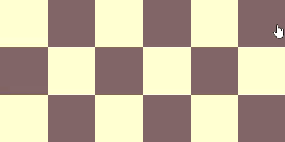
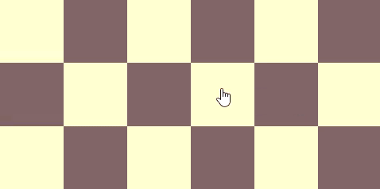

<div class='wizard-modal'>
    <div [ngSwitch]="currentSlide">
    <div *ngSwitchCase="1" class='modal-content'>
        
        <span class='modal-text'>Welcome to Knight! Our objective here is to determine what are the positions a chess knight could take in 2 turns, starting from some initial cell. To begin, simply select a cell!</span>
        <button class='modal-next-button' (click)='nextSlide()'>Next</button>
    </div>

        
    <div *ngSwitchCase="2" class='modal-content'>
        
        <span class='modal-text'>Great, now that we have selected a cell, we simply have to wait a little and the cells in reach will have a pink background. Enjoy!</span>
        <button class='modal-next-button' (click)='nextSlide()'>Done</button>
    </div>
</div>
</div>